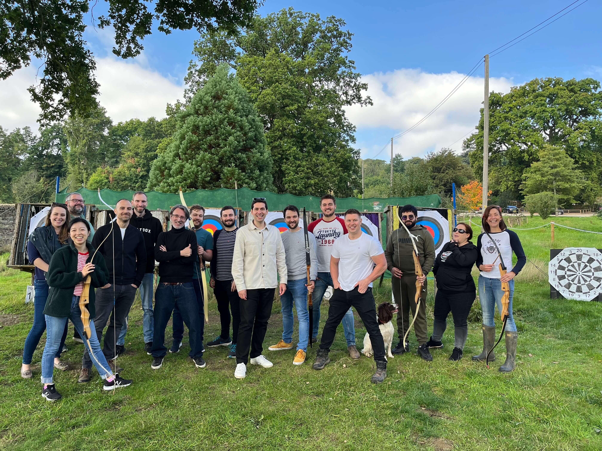
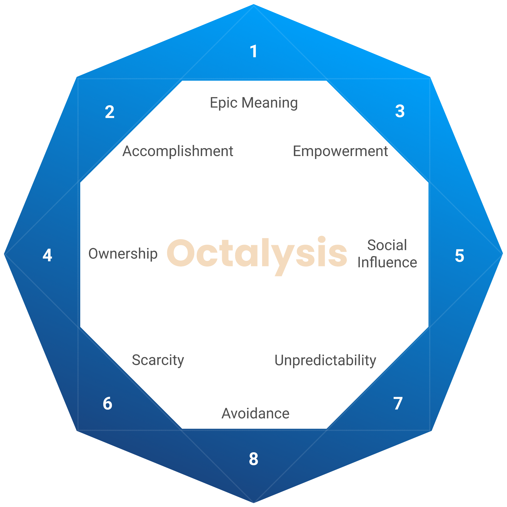
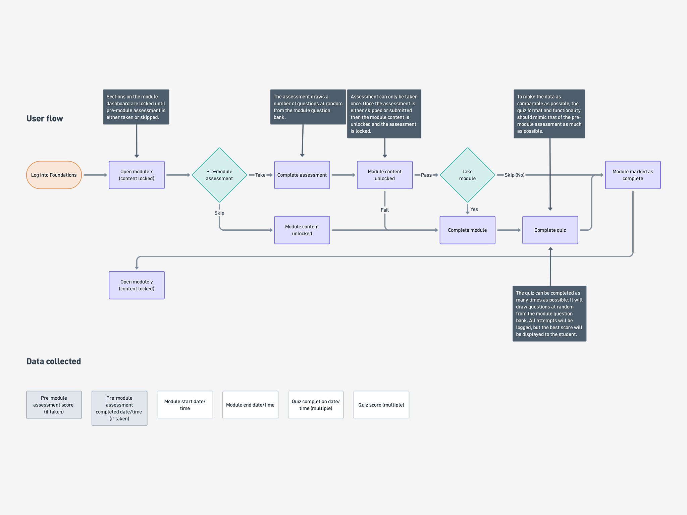
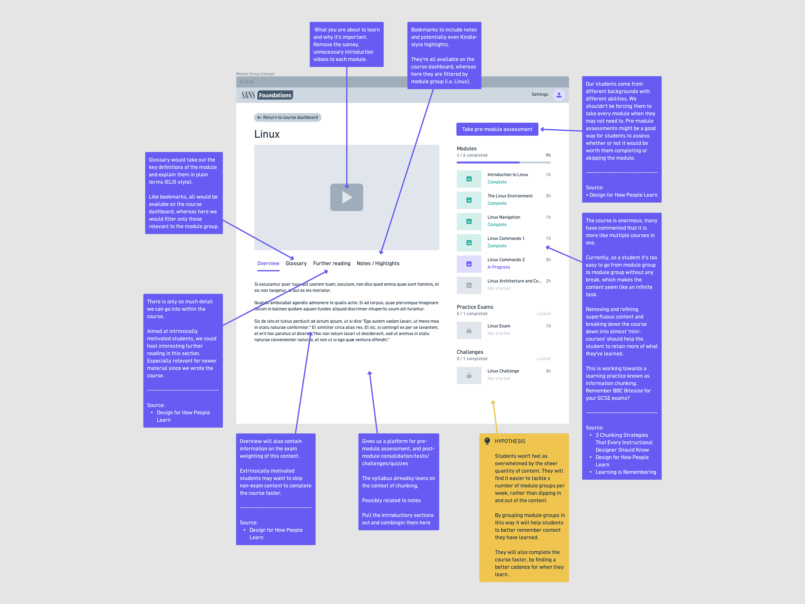
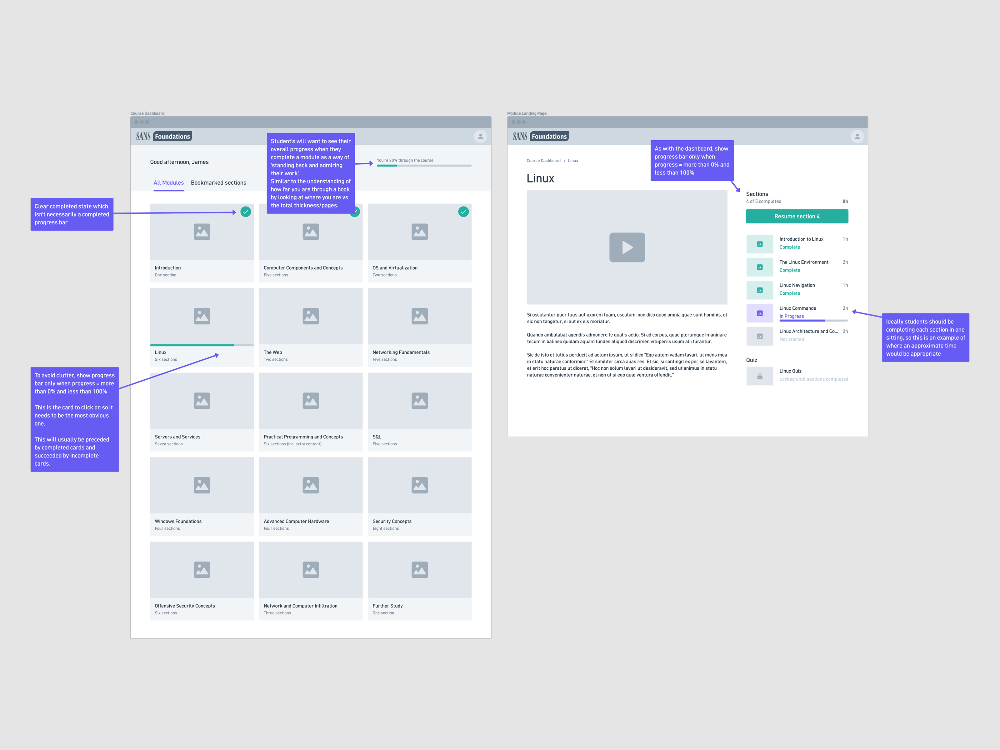
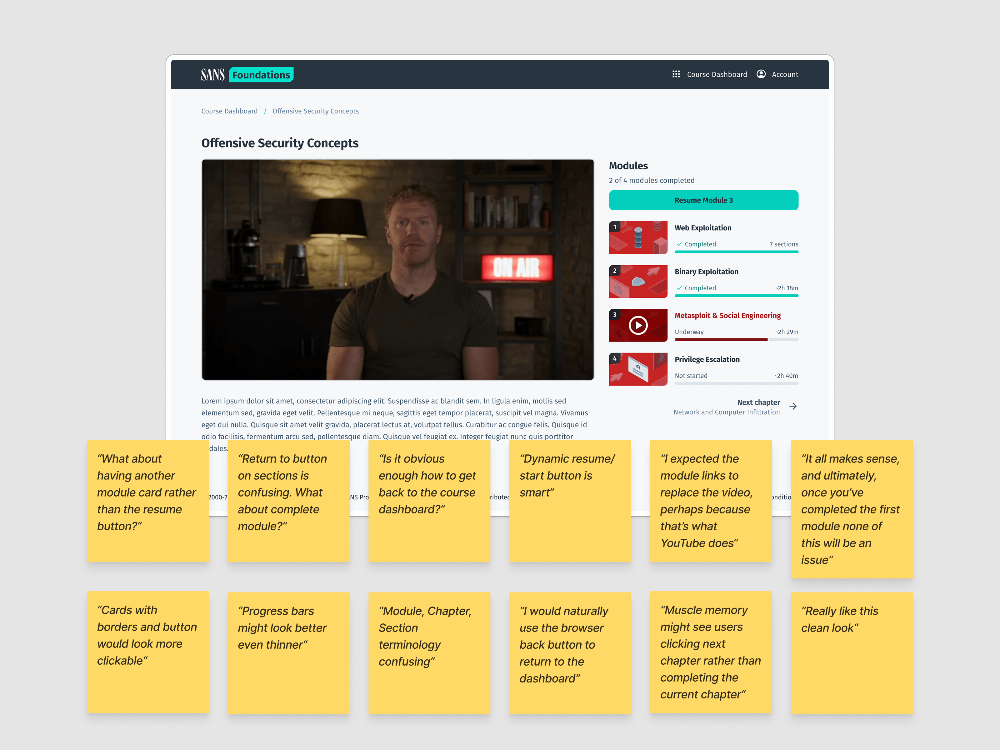
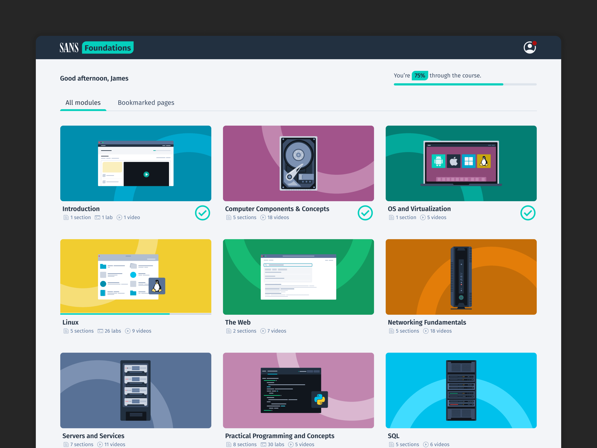
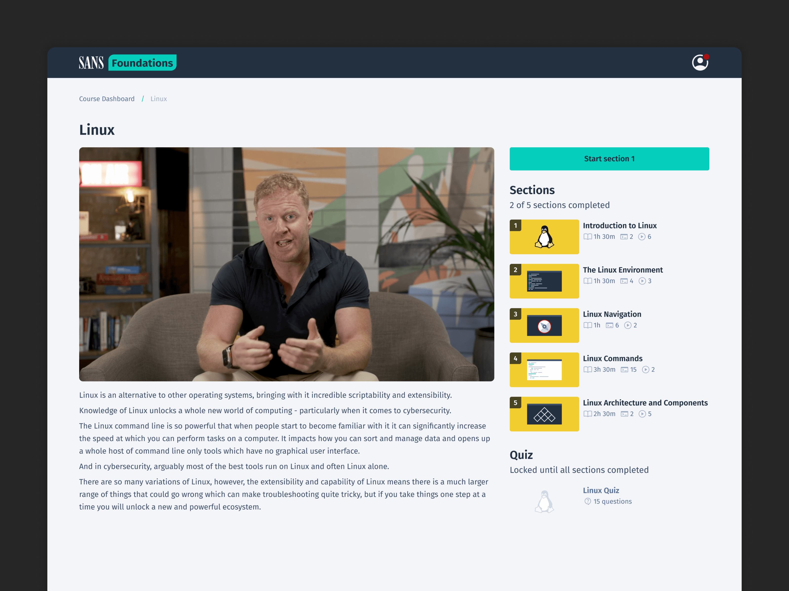

SANS Foundations is an entry-level cybersecurity course and custom learning platform created by Magnetic Rock in partnership with SANS — one of the world’s leading cybersecurity research and training organisations.
As Lead Product Designer, I owned the UX and product design direction of the platform, working with a cross-functional team of product managers, engineers, UX researchers, data scientists and illustrators.

"The course is too long"
The course was already one of the highest-performing products in the SANS catalogue. Students consistently praised the quality of the teaching, particularly the charismatic delivery of cybersecurity expert and TED speaker James Lyne.
But there was one piece of feedback we kept hearing: “The course is too long.”
With more than 80 hours of content, it was long. We explored reducing and restructuring the material, including working with the authors on separate examinable and non-examinable tracks. But the breadth of the curriculum and certification requirements made meaningful cuts difficult.
Rather than treating this purely as a content problem, I reframed it as a perception problem. What if the course didn’t actually need to be shorter? What if it just needed to feel shorter?
Reframing the problem
My hypothesis was that a more motivating and rewarding learning experience could reduce fatigue and help learners maintain momentum, even if the amount of content stayed largely the same.
I began researching gamification, but not in the superficial sense of adding points, badges or rewards. I wanted to understand why games can keep people engaged with difficult tasks for long periods of time — and which of those principles could be applied responsibly to learning.
Design for How People Learn by Julie Dirksen was particularly influential in how I thought about cognitive load, chunking and orientation. Yu-kai Chou’s Octalysis Framework provided another useful lens for understanding motivation through concepts such as accomplishment, feedback, autonomy and progress.

I worked closely with our UX Researcher and Data Scientist throughout the process, using learner research, behavioural data and feedback to challenge my assumptions.
The more I looked at the problem, the clearer the distinction became: the goal wasn’t to make the platform addictive. It was to make sustained learning feel achievable.
Gamification, without the dark patterns
There is a temptation to treat gamification as a collection of mechanics: streaks, points, badges, leaderboards and rewards. But many of those mechanics work precisely because they exploit predictable human behaviours.
That felt particularly inappropriate here. SANS Foundations was also a B2B product, meaning learners could be employees completing training around their existing workload. Creating pressure to maintain a daily streak, for example, would reward platform engagement rather than learning — and could turn an irregular learning schedule into a source of guilt.
I explored a number of ideas, but deliberately rejected several of the most obvious gamification mechanics:
- Streaks — rejected because they encourage consistency for its own sake and can create unnecessary guilt when learners miss a day.
- Leaderboards — explored in the context of cohort learning, but raised questions around employee privacy and inappropriate social comparison.
- Badges and achievements — explored, but felt superficial when the reward was for using the platform rather than demonstrating genuine understanding.
- Examinable / non-examinable paths — explored with course authors, but the additional complexity didn't address the underlying perception problem.
- Pre-module assessment — explored as a way of shortening the course by allowing students to skip parts they already seemed proficient in, but risked learners skipping sections the assessment hadn't properly covered.

The principle became: if a mechanic didn't make learning itself more meaningful, it didn't belong. This shifted the focus away from gamification as a feature set and towards motivation, progress, feedback and cognitive load.
Simply incorporating game mechanics and game elements does not make a game fun.
— Yu-kai Chou - Actionable Gamification: Beyond Points, Badges, and Leaderboards
Designing deliberate friction
One of the most important discoveries came from looking at how the original platform handled progress.
The course contained more than 90 individual sections, presented largely as one continuous journey. The platform had been designed to make moving through those sections as efficient as possible: fewer clicks, less interruption and easy navigation from one piece of content to the next.
On paper, that sounded like good UX.
But behavioural data showed learners were often ending sessions at seemingly arbitrary points. There were few natural moments to stop, reflect on what they'd achieved, or understand where they were within the wider course.
If you don’t give your learners chances to rest, they’ll take them anyway.
— Julie Dirksen — Design for How People Learn
I began to question whether removing friction had actually removed something important. The platform was designed to make progress efficient. I wanted to make progress feel meaningful.
I restructured the 90+ sections into 12 clearly defined modules, creating a stronger hierarchy between section, module and course.

Each module became a small learning journey (or 'mini course') in its own right. A new module landing page introduced the subject with a short video from the course author — James, which explained what learners were about to cover, showed their progress, and gave them a clear sense of what completing that module meant.
It also introduced an intentional, extra click.
Rather than allowing learners to move endlessly from one section into another, the module landing page created a natural pause — a moment to come up for air before starting the next part of the course. The course hadn't become any shorter. But psychologically, the unit of progress had changed.

Instead of constantly seeing dozens of sections still ahead, learners could see a finite number of modules, each with a clear beginning and end.
You want to figure out ways to increase friction (germane cognitive load) while minimizing extraneous cognitive load.
— Julie Dirksen — Design for How People Learn
Making progress visible
The same principle was applied throughout the hierarchy of the course.
Progress became visible at three levels: individual sections, modules and the course as a whole. Completion wasn't just represented as a percentage of what remained; it became a record of what had already been accomplished.
This mattered because different learners were motivated by different things. Some genuinely enjoyed immersing themselves in cybersecurity. Others were completing the course because their employer required it and wanted to know exactly how much work remained.
The interface needed to work for both. It needed to provide enough structure and feedback for learners who wanted momentum, while giving time-conscious learners a clear understanding of the commitment ahead.
The aim wasn't to manufacture motivation. It was to remove some of the psychological weight that made continuing difficult.
Testing and refining
I tested the new structure and navigation with learners throughout the design process, using each round to refine the next iteration.
Early testing exposed some simple but important problems:
- The terminology was confusing
- It wasn't always obvious how to return to the course dashboard
- The different navigation options weren't behaving as users expected

The feedback also helped shape how progress was communicated. “Underway” was replaced with a concrete completion state — “6 of 10 sections completed” — while an experimental progress treatment was dropped when conventional progress bars proved clearer and less visually distracting.
By the third iteration, the navigation had evolved into a simpler system of smart actions based on progress: Start section → Resume section → Next module. Terminology was standardised across the platform, and completion states were made more explicit.
The final direction wasn't the result of getting the first design right. It came from repeatedly putting the work in front of people and responding to what they actually did.
The result
The redesigned experience changed how learners interacted with the course without changing the fundamental amount of content they needed to complete.
Platform and UI satisfaction increased from 4.2 to 4.8 out of 5, becoming the highest-rated aspect of the experience in post-course feedback.
We also saw an ~8% increase in overall course completion, alongside a reduction in early-course drop-off.


Other behavioural measures showed learners returning more consistently and progressing further through the course before stopping.
Qualitative feedback reflected the same shift. Learners described the experience as "better structured", "easier to navigate" and "more manageable" — despite the underlying curriculum remaining broadly the same.
We didn't make the course shorter. We made finishing it feel more possible.
What I took away
The most useful lesson wasn't about gamification. It was about motivation.
Gamification is often reduced to a toolbox of mechanics, but the more valuable question is why a particular mechanic works — and whether you actually want it to work that way.
In this case, I didn't want learners opening the platform because they were afraid of losing a streak. I wanted them to open it because the next step felt clear, achievable and worthwhile.
The project also changed how I think about friction. We often treat every additional click as something to eliminate. But sometimes friction provides structure. A pause can create orientation. A boundary can make progress visible. A small interruption can make a long journey easier to sustain.
The course didn't need another reward system. It needed a better understanding of what makes people feel like they are getting somewhere.